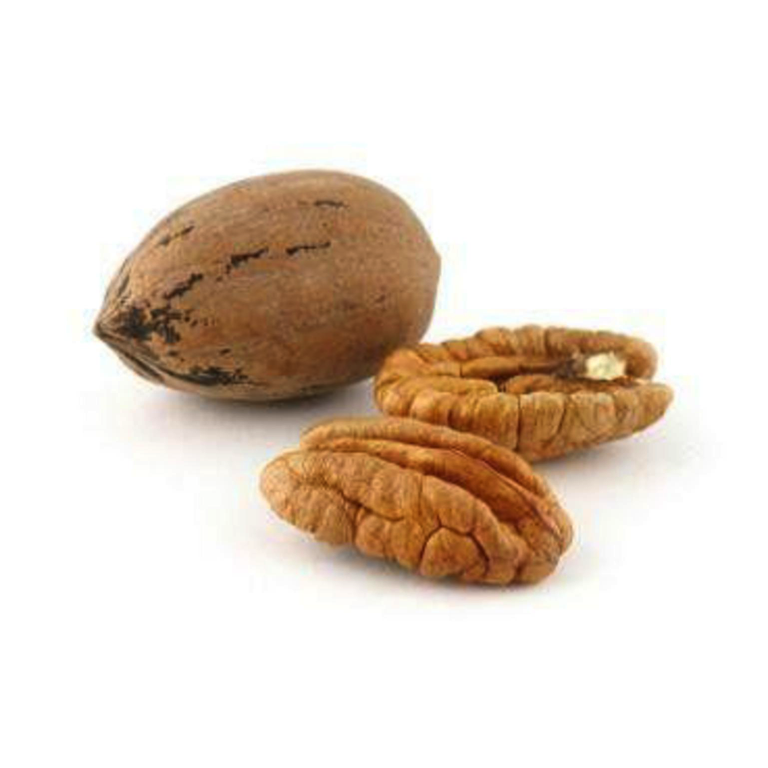

17 Cáscara de nuez pecanera
17.1 (Carya illinoinensis)

Alma A. Vázquez-Flores, Emilio Álvarez -Parrilla, Joaquín Rodrigo-García, Laura A. de la Rosa*
Universidad Autónoma de Ciudad Juárez
Anillo envolvente del Pronaf y Estocolmo s/n,
Cd. Juárez, Chihuahua, CP. 32310, México
* Autor para correspondencia: ldelaros@uacj.mx
17.2 Características agronómicas
El fruto seco de Carya illinoinensis (Wangenh.) K.Koch se conoce comúnmente como nuez pecanera. Es uno de los frutos secos más consumidos en la dieta americana, nativo del sur de Estados Unidos (río Mississippi) y norte de México. El nogal pecanero es una planta angiosperma dicotiledónea que se caracteriza por medir de 15 a 45 m de alto, con 12 a 20 m de follaje y una circunferencia de tronco de 2 metros, que produce como fruto una semilla dura y seca dentro de una vaina o ruezno (Figura 17.1), la cual es expulsada una vez que ha llegado a su maduración (Fronza et al., 2018). La semilla tiene una cáscara dura y una semilla o nuez comestible. El nogal pecanero se caracteriza por presentar una dicogamia incompleta asincrónica entre la flor macho que libera el polen y la recepción del estigma en la flor hembra, lo que hace que una práctica agronómica común sea el uso de varios cultivares en la misma plantación para asegurar la polinización (Reyes y Urrea, 2016).
Figura 17.1: Figura 1. Árbol (a) y fruto de la nuez pecanera (Carya illinoinensis (Wangenh.) K.Koch). En (b) se observa el fruto verde (ruezno) y en (c) el fruto seco.
Los primeros registros del consumo de nuez pecanera datan de hace más de 10,000 años, aun cuando su cultivo es más reciente (aproximadamente año 1,600 en la ciudad de Bustamante, Nuevo León). El primer cultivar propagado vegetativamente fue la variedad “Centennial” en 1876, a partir de entonces se han desarrollado (principalmente en Estados Unidos) numerosas variedades entre las que destacan “Western” y “Wichita” que representan el 85% del área total de siembra (Reyes y Urrea, 2016; Álvarez-Parrilla et al., 2018). Actualmente México y Estados Unidos producen el 90% de la nuez pecanera a nivel mundial, siendo el estado de Chihuahua, en México, el principal productor a nivel nacional con un 65.1% de la producción total y con una superficie cultivada de más de 58 mil hectáreas en 2016 (SIAP, 2016). Los nogales pecaneros pueden vivir hasta 200 años, teniendo las huertas mexicanas una edad promedio de 25 años y una producción promedio nacional de entre 1.1 y 2.4 toneladas/hectárea, con un promedio de 1.47 toneladas/hectárea (Cervantes Vázquez et al., 2018).
17.2.1 Taxonomía
La nuez pecanera (Carya illinoinensis) también es conocida como nuez encarcelada, cáscara de papel, o nuez de la isla; es una especie del género Carya de la familia Juglandaceae. En el Cuadro 1 se presenta la clasificación taxonómica completa de esta especie.
| Reino | Plantae |
| División | Magnoliophyta |
| Clase | Magnoliopsida |
| Orden | Fagales |
| Familia | Juglandaceae |
| Género | Carya |
| Especie | C. illinoinensis |
17.2.2 Condiciones de cultivo
Las condiciones de cultivo óptimas del nogal pecanero involucran suelos arcillosos o franco-arcillosos bien drenados para que no exista acumulación de agua con climas áridos o semiáridos (Reyes y Urrea, 2016). Otro factor importante es que los nogales son intolerantes a la sombra, con lo cual en las plantaciones es necesario tener una distancia adecuada entre los árboles para evitar que se hagan sombra entre sí (Reyes y Urrea, 2016). Para un correcto desarrollo del fruto, el árbol necesita macro y micronutrientes, dentro de los que destacan: nitrógeno (2.3%), fósforo (1,300 ppm), calcio (19,300 ppm), potasio (11,110 ppm), magnesio (108 ppm), zinc (65 ppm), boro (94 ppm) cobre (8 ppm), molibdeno (6.3 ppm) y níquel (< 1 ppm) (Fronza et al., 2018; Salas-Rivera et al., 2018,). El déficit de estos nutrientes (principalmente boro y níquel) produce pérdidas económicas en el fruto por problemas fisiológicos, entre los que destacan el rajado del fruto, que es la ruptura de la cáscara en el fruto por una acumulación de agua (Salas-Rivera et al., 2018). Otros estudios demuestran que el nogal pecanero es sensible a los suelos salinos, así como a deficiencias de oxígeno por suelos con poco drenaje, con lo cual estos factores se deben de tener en cuenta para no afectar la productividad del árbol (Fronza et al., 2018).
Otro factor importante es la precipitación pluvial durante el periodo de desarrollo del fruto que debe oscilar entre 760 y 2,000 mm anuales. Se estima que, para el correcto desarrollo del fruto, el árbol necesita aproximadamente 129,000 litros para producir un promedio de 22 kg de nuez (Fronza et al., 2018). Existen dos sistemas de riego ampliamente utilizados: en Chihuahua se utiliza principalmente riego por inundación, mientras que en el norte del estado de Coahuila se utilizan sistemas de riego por goteo y microaspersión los cuales mejoran el rendimiento por hectárea, aún cuando aumentan los costos de producción (Cervantes Vázquez et al., 2018).
17.2.3 Estacionalidad
El crecimiento de la nuez pecanera requiere un periodo de 240 a 260 días en zonas templadas; pero si el área de cultivo es más fría, su crecimiento se da en un periodo de 170 días. El periodo de cosecha comprende los meses de septiembre a noviembre. La temperatura óptima para el crecimiento de la nuez pecanera es de entre 23 y 29 °C, aun cuando necesita al menos 400 h de temperaturas inferiores a los 7° C para romper la dormancia y que empiece la floración y crecimiento del fruto (Reyes y Urrea, 2016).
17.2.4 Plagas y enfermedades
Los nogales pueden ser afectados tanto por la infestación de plagas, o bien, sufrir enfermedades. Ambos tienen como consecuencia un detrimento en la salud de la planta y como consecuencia, esto puede impactar en una menor producción. Con respecto a las plagas, se ha estimado que los costos para combatirlas representan un 15% de los costos de producción. El gusano barrenador aparece en los nogales más jóvenes y de ahí se propaga por los huertos. Las plagas más frecuentes que afectan al 93% de los huertos en la comarca lagunera de México son: gusano barrenador del ruezno (Cydia caryana), gusano barrenador de la nuez (Acrobasis nuxvorella) y los pulgones negros y amarillos (áfidos) (Cervantes Vázquez et al., 2018).
Para el control del gusano barrenador, normalmente se utilizan trampas de feromonas que atraen a las palomillas machos y de esta manera se monitorea cuándo se deben de empezar los tratamientos de control. Entre los insecticidas más utilizados se encuentran los piretroides o carbarilo. Sin embargo, estos no se recomiendan cuando los huertos han sufrido anteriormente infestaciones de áfidos o ácaros. Otros insecticidas utilizados, con baja toxicidad para humanos y especies beneficiosas, son aquellos que utilizan Bacillus thuringiensis o tebufenozide que atacan a las larvas de las palomillas. La luz solar elimina al Bacillus thuringiensis en menos de 4 días. Otros insecticidas utilizados son clorpirifós, azinfos metílico, endosulfán, fosmet y malatión. En cuanto a control biológico, se han utilizado diferentes insectos y arañas que son enemigos naturales del barrenador. Existen más de 25 especies de avispas que atacan a las larvas del barrenador. Una de ellas es la Trichogramma que ovipositan dentro de los huevos del barrenador y posteriormente eclosionan y consumen el huevo. Sin embargo, no se tiene información fehaciente sobre las especies disponibles de avispas y su método de liberación que realicen un control adecuado de esta plaga (Sistema Universitario Texas A&M, 1914).
Otro reporte de plagas importantes para el nogal fue realizado en la región de Coahuila, México, en el cual éstas se incluyen por orden cronológico de aparición en relación con el ciclo del nogal. En él, se describe a las hormigas cabezonas (Atta texana) como las primeras en aparecer en el mes de marzo. La mosca Sierra (Perclista marginicollis) presenta actividad durante los meses de marzo y abril. El salivazo (Clastoptera achatina) es reportado como una plaga de importancia secundaria con actividad durante los meses abril, mayo, junio y agosto. El gusano barrenador de la nuez (Acrobasis nuxvorella) es una de las plagas más importantes para el nogal y su actividad se reporta entre abril, mayo y junio, siendo más dañina su actividad para finales de abril y principios de mayo. El gusano de la yema (Gretchena bolliana) es un problema para los viveros, mientras que los pulgones (Monellia caryella y Monelliopsis pecanis) presentan actividad en el mes de junio, agosto y a finales de septiembre cuando más dañinos pueden ser. El gusano barrenador del ruezno (Cydia caryana) es una de las plagas con mayor importancia económica para la producción de nuez, y presenta actividad durante los meses julio, agosto y septiembre que es cuando más daño puede causar. El pulgón negro (Melanocallis caryaefoliae) causa mayor daños a árboles criollos sin ningún manejo, aunque no afecta de manera importante a los huertos comerciales. Las chinches (Nezara viridula, Euschistus servus, Leptoglossus phyllopus, Chlorochroa ligata) generan un problema serio, ya que, si bien su actividad no es recurrente, el periodo de aparición es muy importante en la cosecha de nuez, teniendo la mayor actividad a finales de agostos y durante el mes de septiembre. El gusano de la hoja (Datana integerrima) es una plaga de importancia secundaria, restringida a árboles criollos sin cuidado alguno y que raramente afecta a los huertos comerciales. Finalmente, el barrenador del tronco (Xyleborus ferrugineus) no afecta normalmente a los árboles sanos, sino hasta que éstos ya empiezan a morir (Aguilar, 2007).
En otro estudio sobre las plagas, se cita a los pulgones negros y amarillos (Monellia caryella y Monelliopsis pecanis) y a la filoxera (Phylloxera notabilis) como unas de las más importantes para el nogal. Los pulgones además del daño que generan, liberan un líquido azucarado que sirve de substrato para el crecimiento de hongos, los cuales limitan la capacidad fotosintética de las hojas. En cuanto a la filoxera, son unos insectos pequeños que pueden producir defoliación y daños en la cáscara de la nuez, así como caída prematura de la fruta. Este tipo de plagas es frecuente durante periodos de sequía. En cuanto a las principales enfermedades con una gran incidencia en todo el mundo sobre la nuez pecanera se encuentra la infestación por el hongo Fusicladium effusum que genera inhibición del desarrollo de las hojas, y como consecuencia una disminución de la función fotosintética. Es importante la selección de la variedad de nogal pues existen variedades con mayor resistencia al hongo (Fronza et al., 2018).
17.2.5 Características nutricionales
La nuez pecanera de C. illinoinensis es un alimento complejo, su composición proximal se caracteriza por una alta concentración de lípidos, seguidos de carbohidratos, fibra dietética y proteínas (Cuadro 1) (Álvarez-parrilla et al., 2018). La nuez es considerada un alimento de alta densidad calórica (~30 kJ/g) debido a su porción lipídica (Ros, 2010), constituida principalmente de grasas monoinsaturadas MUFAS (45%), poliinsaturadas PUFAS (28%), y en menor cantidad de grasas saturadas (8%) (Ortiz-Quezada et al., 2011). Este tipo de grasas tiene un efecto benéfico sobre la salud, ya que están relacionadas a un bajo riesgo de presentar enfermedades cardiovasculares (Chang et al., 2016). La nuez pecanera además proporciona vitaminas como la colina, vitamina A, C, y E entre las más abundantes, así como los minerales potasio, fósforo, y magnesio. Tanto vitaminas como minerales son micronutrientes esenciales que colaboran como cofactores y coenzimas para mantener un buen estado fisiológico y metabólico del organismo (Haddad, 2011; Álvarez-Parrilla et al., 2018).
Una parte mayoritaria del fruto de C. illinoinensis es la cáscara rígida no comestible que rodea a la nuez. En su composición proximal abunda la fibra dietética, y en menor proporción grasas y proteínas (Cuadro 1). No existen reportes sobre su contenido de vitaminas y minerales, posiblemente por considerarse un material descartado por la industria sin valor alimenticio. Es considerada de bajo o nulo valor comercial, sin embargo, su alto contenido en fibra la destacan como una potencial fuente económica de ingredientes alimenticios capaz de incrementar el valor nutricional de alimentos que carecen de fibra (USDA).
| Nutriente | Nuez | Cáscara |
|---|---|---|
| Energía (kJ/g) | 30* | 381** |
| Proteína (%) | 9* | <3** |
| Carbohidratos (%) | 3.9‡ |
|
| Grasas (%) | 72* | <4** |
| Fibra dietética (%) | 9* | 80-85** |
| Vitaminas | ||
| Colina (g/100g) | 40.5₸ |
|
| Vitamina A (UI) | 56₸ |
|
| Vitamina E (mg) | 1.4₸ |
|
| Vitamina C (mg) | 1.1₸ |
|
| Niacina, B3 (mg) | 1.16₸ |
|
| Minerales | ||
| Potasio (mg) | 410₸ |
|
| Fósforo (mg) | 277₸ |
|
| Magnesio (mg) | 121₸ |
|
| Calcio (mg) | 70₸ |
|
| Zinc (mg) | 4.5₸ |
|
| ** Promedios reportados por la USDA | ||
| ₸Álvarez-Parrilla 2018 | ||
| ‡ Haddad 2011 | ||
| * Ortiz-Quezada 2011 | ||
| Abreviaciones: kJ, kilojoule; UI, unidades internacionales |
El fruto de C. illinoinensis no sólo es rico en compuestos nutritivos, además presenta fitoquímicos tanto en su porción lipídica como en la no lipídica, considerados compuestos bioactivos que intervienen mejorando el desempeño ya sea fisiológico, físico o mental del organismo. Entre ellos, se describen a los esteroles, tocoles y polifenoles (Haddad, 2011; Ortiz-Quezada et al., 2011). Sin embargo se ha observado que el contenido fitoquímico y nutritivo varía según el cultivar y las condiciones ambientales en que crece la planta, entre otros factores agrícolas (Álvarez-Parrilla et al., 2018).
17.2.6 Productos alimenticios
La nuez pecanera ha sido parte de la dieta humana por miles de años, una vez que es descascarada se consume como ingrediente en la gastronomía de distintos países o como aperitivo (Ros, 2010). Las podemos encontrar también en presentación cruda, tostada, en mitades, en trozos, en jaleas, ensaladas, confituras, helados y repostería en general (Ortiz-Quezada et al., 2011; de la Rosa et al., 2014).
Por otra parte, el uso de la cáscara como alimento ha sido limitado, algunos estudios reportan el uso de infusiones de cáscara como remedios naturales-medicinales (Hilbig et al., 2018). Más que producto alimenticio, la cáscara muestra potencial como aditivo alimenticio, se ha usado para incrementar la vida de anaquel de lechugas mínimamente procesadas (Caxambú et al., 2016) ya que inhibe el crecimiento de bacterias responsables del deterioro común; de igual manera, en la carne de pollo logra inhibir el crecimiento de bacterias patógenas como L. monocytogenes (Babu et al., 2013).
17.2.7 Propiedades funcionales del fruto de C. illinoinensis
Existe un gran interés actual por los efectos benéficos a la salud del consumo habitual de nueces (incluyendo más no limitado a la nuez pecanera), así como por la caracterización y extracción de los componentes bioactivos del fruto y cáscara de C. illinoinensis debido a su uso como ingredientes funcionales. Hoy en día, la Food and Drug Administration (FDA, por sus siglas en inglés) y la European Food Safety Authority (EFSA, por sus siglas en inglés) han reconocido que el consumo aproximado de 30-40 g de nuez logra reducir el riesgo cardiovascular (Alasalvar y Bolling, 2015). Algunos estudios señalan que el beneficio cardiovascular está relacionado a la porción lipídica, principalmente al contenido de MUFAs y PUFAs, así como de ácido α-linoleico, que favorecen la vasodilatación del endotelio cardiovascular. De igual manera los tocoles (tocoferoles y tocotrienoles) participan como vitaminas liposolubles con función antioxidante, a través de la inactivación de reacciones en cadena durante la peroxidación de lípidos insaturados, mientras que los fitoesteroles inhiben la absorción del colesterol dietario (Alasalvar y Bolling, 2015). En la Figura 17.1, se muestran las estructuras de los tocoles y fitoesteroles más comunes en la nuez, así como su contenido.
Los compuestos bioactivos lipídicos pueden actuar solos o lo pueden hacer sinérgicamente con los compuestos bioactivos no lipídicos, donde se incluyen los compuestos polifenólicos (Chang, 2016). A estos se les atribuyen múltiples actividades farmacobiológicas, entre las que destacan prevención de enfermedades crónicas no transmisibles como el cáncer y diabetes, así como beneficios antiinflamatorios.
La nuez pecanera es uno de los alimentos con más elevado contenido de compuestos polifenólicos; sin embargo, las cáscaras contienen altas concentraciones aún más elevadas (de la Rosa et al., 2014), ya que son sintetizadas en respuesta de factores bióticos y abióticos de la planta (Feng et al., 2016), logrando concentrar una mayor cantidad de compuestos en las partes expuestas del fruto. Al igual que a la nuez, a los polifenoles de cáscara también se les atribuyen actividades antioxidantes, citoprotectoras, analgésicas, hipolipidémicas y antidiabéticas (Trevisan et al., 2014; Porto et al., 2015). Se ha demostrado que la cantidad y tipo de compuestos polifenólicos presentes en nuez y cáscara varían (Vazquez-Flores et al., 2017), de esta manera podemos encontrar desde ácidos fenólicos simples como el ácido gálico, clorogénico, vanílico y elágico hasta complejos taninos hidrolizables constituidos por unidades de ácido gálico, elágico e hidroxidifénico unidos entre sí y con monosacáridos. Mientras que entre los flavonoides se han reportado principalmente flavan 3-oles, también conocidos como compuestos del grupo de la catequina y epicatequina, las cuales difieren entre sí únicamente en la proyección de la sustitución OH del C3. Por otro lado, las (epi)galocatequinas (componentes del mismo grupo) difieren en que el anillo B se encuentra más hidroxilado que las anteriores. Los flavan-3-oles presentes en C. illinoinensis también pueden presentar esterificaciones con ácido gálico, dando lugar a (epi)catequinas-3galatos y (epi)galocatequinas3-galatos. Por último pueden presentar condensaciones entre estas mismas estructuras, dando lugar a proantocianidinas (PAC) más complejas que pueden ir desde dímeros hasta hexámeros para la nuez y hasta decámeros para la cáscara (Villarreal-Lozoya et al., 2007; Pinheiro do Prado et al., 2009; de la Rosa et al., 2014; Vázquez-Flores et al., 2017; Hilbig et al., 2018). Es importante conocer la estructura que presentan los polifenoles en el fruto ya que de ésta depende la intensidad con la que se ejercen ciertas actividades biológicas (Zhou et al., 2014; Cui et al., 2015; Cires et al., 2017). En la Figura 17.2, se muestran las estructuras de los polifenoles más abundantes de nuez y cáscara de C. illinoinensis.
Figura 17.2: Figura 17.2 Compuestos bioactivos liposolubles e hidrosolubles del fruto de C. illinoinensis.
Aunque se ha reportado la presencia de polifenoles libres-monoméricos en los tejidos vegetales, las formas condensadas, polimerizadas o glicosiladas suelen ser las más abundantes, de hecho las proantocianidinas (formadas por la condensación de flavan-3-oles) conforman el grupo de compuestos polifenólicos más abundantes en la nuez y cáscara de C. illinoinensis (Cuadro 2, Gu et al., 2004). Basándonos en las PAC como los compuestos bioactivos hidrosolubles de mayor abundancia, describimos a continuación algunas de las propiedades funcionales asociadas a su consumo, así como los mecanismos involucrados en sus efectos biológicos.
17.2.8 Efectos relacionados con la actividad antioxidante: como antiinflamatorio, otorga beneficios cardiovasculares y citoprotectores
La actividad antioxidante de las PAC de C. illinoinensis puede ejercer un efecto protector sobre la condición generalizada de individuos en proceso de dolor e inflamación, también se ha observado que disminuye la incidencia de riesgos cardiovasculares de pacientes diabéticos (Bahadoran et al., 2013). Estas condiciones tanto crónicas como agudas, desarrollan desbalances redox dentro de las células que sobreactivan a mediadores de inflamación como el factor de necrosis tumoral (TNF-α), la secreción de prostaglandinas a través de ciclooxigenasas (COX), las interleuquinas (IL1 e IL6) y que a su vez incrementan la acumulación de radicales libres y el desbalance redox (dos Santos et al., 2006). Debido a las múltiples sustituciones de grupos OH que posee la estructura de las PAC de nuez, así como su elevado poder reductor, tienen la capacidad de prevenir la oxidación a través de la neutralización de radicales libres (Sergent et al., 2012), ayudando en el equilibrio redox de la célula.
Se ha observado que la ingesta de PAC de nuez en pacientes con diabetes mejora sus condiciones cardiovasculares. Las anormalidades metabólicas de estos pacientes inducen la peroxidación lipídica, principalmente en lipoproteínas de baja densidad, lo que genera cambios en el endotelio cardiovascular e incrementa el riesgo de enfermedades cardiacas. Al igual que el efecto antiinflamatorio, el mecanismo por el cual las PAC mejoran la condición cardiovascular de diabéticos se debe a sus propiedades antioxidantes, ya que atenúan el daño oxidativo que genera la oxidación lipídica a través del secuestro de radicales libres (Bahadoran et al., 2013).
Se han analizado los efectos citoprotectores, también asociados a la actividad antioxidante de las PAC de la cáscara. Estos beneficios se han demostrado en el sistema nervioso bajo tratamiento con medicamentos antipsicóticos, los cuales dejan como secuela la excesiva producción de dopamina que es susceptible a autooxidarse e incrementar el nivel de estrés oxidativo, provocando la degeneración neuronal (Trevizol et al., 2011). Los efectos citoprotectores de PAC de cáscaras se observan de la misma manera sobre células que han sido expuestas a medicamentos utilizados en el tratamientos de cáncer de hígado y leucemia mieloide, reduciendo el estrés oxidativo en células tumorales, así como reduciendo la citotoxicidad en las células normales (Benvegnú et al., 2010).
17.2.9 Efecto anti-tumoral
Otra actividad biológica de PAC de cáscara, pero cuyo mecanismo no se encuentra del todo descrito, es el efecto anti-tumoral. Se ha demostrado que las PAC logran activar enzimas que promueven la apoptosis de células tumorales de seno. Además de causar la fragmentación de ADN de células con el mismo cáncer, favoreciendo la supervivencia de las no tumorales (Hilbig et al., 2018).
17.2.10 Efecto hipolipidémico e hipoglicémico
El efecto hipolipidémico e hipoglucémico de las PAC ya se ha demostrado con el uso de ciertos frutos y vegetales, así como entre algunas nueces y sus subproductos (Chang et al., 2016). Una de las principales propiedades de las PAC, es que tienen la capacidad de interaccionar con proteínas. Esto las hace de especial interés ya que al unirse a enzimas específicas, por ejemplo las enzimas digestivas, logran modificar su actividad, modificando, en este caso, la absorción de lípidos y glucosa (Martínez-González et al., 2017). Algunos autores proponen que las interacciones entre PAC y enzima se llevan a cabo a través de enlaces no covalentes (principalmente interacciones hidrofóbicas, hidrofílicas e iónicas), y que logran establecerse en regiones indispensables para la actividad catalítica de la enzima, inhibiendo así su actividad específica (Chai et al., 2015). Se ha observado con éxito el efecto inhibitorio de PAC de nuez y de cáscara sobre enzimas digestivas αamilasa y lipasa, logrando una inhibición del casi el 50 y el 30% de la actividad enzimática respectivamente. En la constante búsqueda de nuevas estrategias que disminuyan los desequilibrios calóricos y nutricionales de la dieta actual, el fruto de C. illinoinensis tiene un futuro promisorio (Vázquez-Flores et al., 2017). Sin embargo, también se ha observado la inhibición de proteasas (tripsina), lo cual constituye un riesgo antinutricio que se debe tomar en cuenta a la hora de consumir el fruto.
| Porción | Actividad funcional | Mecanismo | Fuente |
|---|---|---|---|
| Nuez | ↓ Riesgo cardiovascular ↓ Riesgo diabético Mejora control de peso | Capacidad antioxidante Inhibidor de enzimas | (McKay et al., 2018) (dos Santos et al., 2006) |
| Nuez | ↓ Riesgo cardiovascular en diabéticos | Capacidad antioxidante | (Bahadoran et al., 2013) |
| Cáscara | ↑ Citoprotección neuronal ↑ Citoprotección celular | Capacidad antioxidante | (Trevizol et al., 2011) Benvegnú 2010 |
| Cáscara | ↓ Reducción de la absorción de nutrientes en exceso de la dieta | Inhibidor de enzimas | (Vázquez-Flores et al., 2017) |
| Cáscara | Antitumoral en células cancerosas de seno | Actividad pro apoptótica | (Hilbig et al., 2018) |
Resulta interesante que, a pesar de que existe una fuerte evidencia del beneficio cardiovascular del consumo de nuez, la mayoría de estos estudios se concentran en estudiar la porción lipídica, mientras que una gran parte de los compuestos bioactivos pertenece al grupo de los compuestos polifenólicos hidrofílicos, incluso se señala que es en conjunto que se obtienen mejores resultados, sugiriendo sinergismo entre ambos tipos de fitoquímicos (Domínguez-Avila et al., 2015; Kris-Etherton et al., 2008). Profundizar en el conocimiento acerca de los subproductos como la cáscara y sus fitoquímicos, amplía sus posibles aplicaciones tecnológicas, brindándole un valor agregado y mayor aprovechamiento a un material descartado por la industria.
Considerando los diferentes efectos biológicos y los mecanismos involucrados en el fruto seco de C. illinoinensis, así como la diversidad estructural de sus compuestos bioactivos, es importante reconocer la necesidad de desarrollar más estudios que conduzcan a una mayor exploración de los fitoquímicos presentes en fruto y brinden información más detallada sobre sus funciones biológicas, para que esta nuez y su subproducto, ambos de suma importancia como productos agrícolas mexicanos, puedan ser mejor aprovechados.
17.3 Referencias
Aguilar Pérez, J.H. 2007. Principales plagas del nogal en el norte de Coahuila. INIFAP-CIRNE. Campo experimental Saltillo. Sitio experimental Zaragoza. Folleto técnico núm 14. Zaragoza, Coahuila, México. 28 p
Alasalvar, C., y Bolling, B. W. (2015). Review of nut phytochemicals, fat-soluble bioactives, antioxidant components and health effects. British Journal of Nutrition, 113(S2), S68–S78.
Álvarez-Parrilla, E., Urrea-López, R., y Rosa, L. A. De. (2018). Bioactive components and health effects of pecan nuts and their by-products: a review. Journal of Food Bioactives, 1, 56–92.
Babu, D., Crandall, P. G., Johnson, C. L., O’Bryan, C. A., y Ricke, S. C. (2013). Efficacy of antimicrobials extracted from organic pecan shell for inhibiting the growth of listeria spp. Journal of Food Science, 78(12), 10–14.
Bahadoran, Zahra; Mirmiran, Parvin; Azizi, F. (2013). Dietary polyphenols as potential nutraceuticals in management of diabetes: a review. Journal of Diabetes & Metabolic Disorders, 12, 1–9.
Benvegnú, D., Barcelos, R. C. S., Boufleur, N., Reckziegel, P., Pase, C. S., Muller, L. G., y Burger, M. E. (2010). Protective Effects of a By-Product of the Pecan Nut Industry (Carya illinoensis) on the Toxicity Induced by Cyclophosphamide in Rats Carya illinoensis Protects Against Cyclophosphamide- Induced Toxicity. Journal of Environmental Pathology, Toxicology and Oncology, 29(3), 185–197.
Caxambú, S., Biondo, E., Kolchinski, E. M., Padilha, R. L., Brandelli, A., y Sant’anna, V. (2016). Evaluation of the antimicrobial activity of pecan nut [Carya illinoinensis (Wangenh) C. Koch] shell aqueous extract on minimally processed lettuce leaves. Food Science and Technology (Campinas), 36, 42–45.
Chai, W. M., Wei, M. K., Wang, R., Deng, R. G., Zou, Z. R., y Peng, Y. Y. (2015). Avocado proanthocyanidins as a source of tyrosinase inhibitors: Structure characterization, inhibitory activity, and mechanism. Journal of Agricultural and Food Chemistry, 63(33), 7381–7387.
Chang, S. K., Alasalvar, C., Bolling, B. W., y Shahidi, F. (2016). Nuts and their co-products: The impact of processing (roasting) on phenolics, bioavailability, and health benefits - A comprehensive review. Journal of Functional Foods, 26, 88–122.
Cervantes Vázquez, M. G., Orona Castillo, I., Vázquez Vázquez, C., Fortis, Hernández, M., Espinosa Arellano, J. J. (2018). Análisis comparativo de huertos de nuez pecanera (Carya illinoensis Koch) en la Comarca Lagunera. Revista Mexicana de Ciencias Agrícolas, 9(1): 25-35.
Cires, M. J., Wong, X., Carrasco-Pozo, C., y Gotteland, M. (2017). The Gastrointestinal Tract as a Key Target Organ for the Health-Promoting Effects of Dietary Proanthocyanidins. Frontiers in Nutrition, 3(January).
Cui, F., Yang, K., y Li, Y. (2015). Investigate the binding of catechins to trypsin using docking and molecular dynamics simulation. PLOS ONE, 10(5), 1–18.
De la Rosa, L. A., Vázquez-Flores, A. A., Álvarez-Parrilla, E., Rodrigo-García, J., Medina-Campos, O. N., Ávila-Nava, A., y Pedraza-Chaverri, J. (2014). Content of major classes of polyphenolic compounds, antioxidant, antiproliferative, and cell protective activity of pecan crude extracts and their fractions. Journal of Functional Foods, 7(1), 219–228.
Domínguez-Avila, J. A., Álvarez-Parrilla, E., López-Díaz, J. A., Maldonado-Mendoza, I. E., Gómez-García, M. D. C., y De La Rosa, L. A. (2015). The pecan nut (Carya illinoinensis) and its oil and polyphenolic fractions differentially modulate lipid metabolism and the antioxidant enzyme activities in rats fed high-fat diets. Food
Dos Santos, M. D., Almeida, M. C., Lopes, N. P., y de Souza, G. E. P. (2006). Evaluation of the Anti-inflammatory, Analgesic and Antipyretic Activities of the Natural Polyphenol Chlorogenic Acid. Biological & Pharmaceutical Bulletin, 29(11), 2236–2240.
Feng, J., Zhang, X. L., Li, Y. Y., Cui, Y. Y., y Chen, Y. H. (2016). Pinus massoniana Bark Extract: Structure-Activity Relationship and Biomedical Potentials. The American Journal of Chinese Medicine, 44(8), 1559–1577.
Fronza, D., Hamann, J. J., Both, V., Anese, R. O., Meyer, E. A. (2018). Pecan cultivation: general aspects. Ciência Rural, Santa Maria, 48(2): e20170179
Gu, L., Kelm, M. A., Hammerstone, J. F., Beecher, G., Holden, J., Haytowitz, D., y Prior, R. L. (2004). Concentrations of proanthocyanidins in common foods and estimations of normal consumption. The Journal of Nutrition, 134(3), 613–7.
Haddad, E. H. (2011). Health Effects of a Pecan [Carya illinoinensis (Wangenh.) K: Koch] Nut-rich Diet. Nuts and Seeds in Health and Disease Prevention.
Hilbig, J., Policarpi, P. de B., Grinevicius, V. M. A. de S., Mota, N. S. R. S., Toaldo, I. M., Luiz, M. T. B., y Block, J. M. (2018). Aqueous extract from pecan nut [Carya illinoinensis (Wangenh) C. Koch] shell show activity against breast cancer cell line MCF-7 and Ehrlich ascites tumor in Balb-C mice. Journal of Ethnopharmacology, 211(July 2017), 256–266.
Kris-Etherton, P. M., Hu, F. B., Ros, E., y Sabaté, J. (2008). The role of tree nuts and peanuts in the prevention of coronary heart disease: multiple potential mechanisms. The Journal of Nutrition, 138(9), 1746S–1751S.
Martínez-González, A. I., Álvarez-Parrilla, E., Díaz-Sánchez, Á. G., de la Rosa, L. A., Núñez-Gastélum, J. A., Vázquez-Flores, A. A., y González-Aguilar, G. A. (2017). In vitro inhibition of pancreatic lipase by polyphenols: A kinetic, Fluorescence spectroscopy and molecular docking study. Food Technology and Biotechnology, 55(4), 519–530.
McKay, D. L., Eliasziw, M., Oliver Chen, C. Y., y Blumberg, J. B. (2018). A pecan-rich diet improves cardiometabolic risk factors in overweight and obese adults: A randomized controlled trial. Nutrients, 10(3).
Ortiz-Quezada, A. G., Lombardini, L., y Cisneros-Zevallos, L. (2011). Antioxidants in Pecan Nut Cultivars [Carya illinoinensis (Wangenh.) K: Koch]. Nuts and Seeds in Health and Disease Prevention.
Pinheiro do Prado, A. C., Monalise Aragão, A., Fett, R., y Block, J. M. (2009). Antioxidant Properties of Pecan Nut [Carya illinoinensis (Wangenh.) C. Koch] Shell Infusion. Grasas Y Aceites, 60(4), 330–335.
Porto, L. C. S., da Silva, J., Ferraz, A. B. F., Ethur, E. M., Porto, C. D. L., Marroni, N. P., y Picada, J. N. (2015). The Antidiabetic and Antihypercholesterolemic Effects of an Aqueous Extract from Pecan Shells in Wistar Rats. Plant Foods for Human Nutrition, 70(4), 414–419.
Reyes Vázquez, N. C., y Urrea López, R. (2016). Retos y oportunidades para el aprovechamiento de la Nuez pecanera en México. Editorial: Centro de Investigación y Asistencia en Tecnología y Diseño del Estado de Jalisco, A.C. (CIATEJ). Primera edición. pp 124.
Ros, E. (2010). Health benefits of nut consumption. Nutrients, 2(7), 652–682.
Sergent, T., Vanderstraeten, J., Winand, J., Beguin, P., y Schneider, Y. J. (2012). Phenolic compounds and plant extracts as potential natural anti-obesity substances. Food Chemistry, 135(1), 68–73.
Salas-Rivera, R., Valdez-Aguilar, L. A., Lira-Saldívar, R. H., Ibarra-Jiménez, L., Cárdenas-Flores, A. (2018). Aspersiones foliares con nutrimentos vs. el rajado de nuez en nogal pecanero Carya illinoinensis. Acta Universitaria, 28(1), 1-8.
SIAP, Servicio de Información Agroalimentaria y Pesquera. (2016). Anuario Estadístico de la Producción Agrícola. http://nube.siap.gob.mx/cierre_agricola/ Accessed 29 Mar. 2018.
Sistema Universitario Texas A&M (1914). El Control del Barrenador de la Nuez. http://oaktrust.library.tamu.edu/bitstream/handle/1969.1/86983/pdf_1395.pdf/ Accesada 27 Mayo 2018.
Trevisan, G., Rossato, M. F., Hoffmeister, C., Müller, L. G., Pase, C., Córdova, M. M., y Ferreira, J. (2014). Antinociceptive and antiedematogenic effect of pecan (Carya illinoensis) nut shell extract in mice: A possible beneficial use for a by-product of the nut industry. Journal of Basic and Clinical Physiology and Pharmacology, 25(4), 401–410.
Trevizol, F., Benvegnú, D. M., Barcelos, R. C. S., Pase, C. S., Segat, H. J., Dias, V. T., y Burger, M. E. (2011). Comparative study between two animal models of extrapyramidal movement disorders: Prevention and reversion by pecan nut shell aqueous extract. Behavioural Brain Research, 221(1), 13–18.
Vázquez-Flores, A. A., Wong-Paz, J. E., Lerma-Herrera, M. A., Martínez-González, A. I., Olivas-Aguirre, F. J., Aguilar, C. N., de la Rosa, L. A. (2017). Proanthocyanidins from the kernel and shell of pecan (Carya illinoinensis): Average degree of polymerization and effects on carbohydrate, lipid, and peptide hydrolysis in a simulated human digestive system. Journal of Functional Foods, 28, 227–234.
Villarreal-Lozoya, J. E., Lombardini, L., y Cisneros-Zevallos, L. (2007). Phytochemical constituents and antioxidant capacity of different pecan [Carya illinoinensis (Wangenh.) K. Koch] cultivars. Food Chemistry, 102(4), 1241–1249.
Zhou, H. C., Tam, N. F. Y., Lin, Y. M., Ding, Z. H., Chai, W. M., y Wei, S. D. (2014). Relationships between degree of polymerization and antioxidant activities: A study on proanthocyanidins from the leaves of a medicinal mangrove plant Ceriops tagal. PLoS ONE, 9(10).